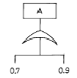
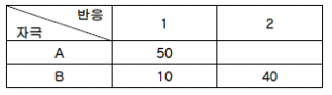
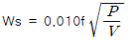
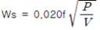
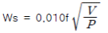
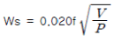

산업안전기사 (2003-05-25 기출문제)
1과목: 안전관리론
1. 다음의 교육지도 방법 중 off JT의 장점이 아닌 것은?
- 다수의 대상자를 일괄적, 조직적으로 교육할 수 있다.
- 교육목표에 대하여 집단적인 협조와 협력이 가능하다.
- 특별교재, 교구, 시설을 유효하게 활용할 수 있다.
- 교육으로 인해 업무가 중단되는 손실이 적다.
(정답률: 74%)

2. 경험한 내용이나 학습된 행동을 다시 생각하여 작업에 적용하지 아니하고 방치함으로서 경험의 내용이나 인상이 해지거나 소멸되는 현상은?
- 착각
- 훼손
- 망각
- 단절
(정답률: 78%)
3. 버드의 관리모델에서 재해발생의 근원적 원인은 무엇인가?
- 상해발생
- 징후발생
- 접촉발생
- 관리의 소홀
(정답률: 71%)
4. 다음 벽돌 쌓기 중 가장 많이 사용되는 쌓기법은?
- 영국식 쌓기
- 네델란드식 쌓기
- 프랑스식 쌓기
- 미국식 쌓기
(정답률: 52%)
5. 학생이 자기 학습속도에 따른 학습이 허용되어 있는 상태에서 학습자가 프로그램 자료를 가지고 단독으로 학습하도록 하는 교육방법은?
- 수업 TV방송
- 모의법
- 실연법
- 프로그램 학습법
(정답률: 86%)
6. 재해발생시 조치할 사항을 옳게 연결한 것은?
- 재해조사 - 원인분석 - 대책수립 - 응급조치
- 긴급조치 - 재해조사 - 원인분석 - 대책수립
- 대책수립 - 원인분석 - 긴급조치 - 재해조사
- 재해조사 - 대책수립 - 원인분석 - 긴급조치
(정답률: 76%)
7. 재해율을 산출하고자 할 때 근로자 1인의 평생근로 가능 시간을 얼마로 계산하는가? (단, 일일 8시간, 1개월 25일 근무, 평생근로연수를 40년으로 보고, 평생 잔업시간을 4,000시간으로 본다.)
- 75000시간
- 96000시간
- 100000시간
- 1000000시간
(정답률: 63%)
8. 안전교육 중 제1단계로 시행되며 화학, 전기, 방사능의 설비를 갖춘 기업에서 특히 필요성이 큰 교육은?
- 안전기술교육
- 안전지식교육
- 안전태도교육
- 안전기능교육
(정답률: 69%)
9. 불안전한 동작을 유발시키는 심리적 원인 행위가 아닌 것은?
- 근도반응
- 초조반응
- 생략행위
- 무경험
(정답률: 41%)
10. 다음 심리검사의 종류 중 계산에 의한 검사와 거리가 먼 것은?
- 수학응용검사
- 계산검사
- 공구판단검사
- 기록검사
(정답률: 67%)
11. 맥박수, 호흡, 체온 등 인간의 상태를 monitoring하여 안전대책강구에 활용하고 있다면 이 monitoring방법을 무엇이라고 하는가？
- 자기적 방법 (self monitoring)
- 생리학적 방법 (physiology monitoring)
- 시각적 방법 (visual monitoring)
- 반응적 방법 (reaction monitoring)
(정답률: 84%)
12. Bird의 재해분포에 따르면, 10건의 경상(물적 또는 인적상해)사고가 발생하였을 때 무상해, 무사고(위험순간)는 몇 건이 발생하는가?
- 300
- 400
- 600
- 800
(정답률: 69%)
13. 재해통계 작성시 유의할 점 중 관계가 적 은 것은?
- 활용목적을 수행할 수 있도록 충분한 내용이 포함 되어야 한다.
- 재해통계는 구체적으로 표시되고 그 내용은 용이하게 이해되며 이용할 수 있을 것
- 재해통계는 정성적으로 도표나 그림으로 표시할 것
- 재해통계는 항목 내용 등 재해요소가 정확히 파악될수 있도록 방지대책이 수립될 것
(정답률: 61%)
14. 안면부 여과식의 방진마스크는 등급이 몇 종류나 되는가?
- 3종류
- 4종류
- 5종류
- 6종류
(정답률: 56%)
15. 다음 중 사고방지의 기본원리 중 그 시정책을 선정하는데 필요한 조치가 아닌 것은?
- 기술교육 및 훈련의 개선
- 안전행정의 개선
- 안전점검 및 사고조사
- 인사조정 및 감독체제의 강화
(정답률: 31%)
16. 안전교육의 피교육자의 심리상태를 이해하기 위한 내용과 거리가 먼 것은?
- 긴장감을 제거해 줄 것
- 교육자의 입장에서 가르칠 것
- 안심감을 줄 것
- 믿을 수 있는 내용으로 쉽게 할 것
(정답률: 68%)
17. 다음은 방진마스크를 선택할 때의 일반적인 유의사항에 관한 설명 중 틀 린 것은?
- 중량이 가벼울수록 좋다.
- 흡기저항이 큰 것일수록 좋다.
- 안면에의 밀착성이 좋아야 한다.
- 손질하기가 간편할수록 좋다.
(정답률: 75%)
18. 안전 관리의 조직형태 중에서 경영자(수뇌부)의 지휘와 명령이 위에서 아래로 하나의 계통이 되어 잘 전달되며 소규모 기업에 적합한 방식은?
- staff 방식
- line 방식
- line - staff 방식
- round 방식
(정답률: 77%)
19. 기계설비의 풀 프루프(Fool proof)기능을 가장 적절히 설명한 것은?
- 작업자가 기계설비를 잘못 취급 하더라도 사고가 일어나지 않도록 하는 기능
- 기계 등의 구조부나 부품의 파손 또는 고장이 일어나더라도 안전하게 작동되게 하는 기능
- 고장이 발생하면 경보를 발생하고 필요한 대체 시스템으로 적절히 바뀌는 기능
- 고장이 발생하면 이를 검출하여 기계 등을 안전하도록 바꾸는 기능
(정답률: 76%)
20. 인간의 사회 행동 기본 형태에 해당되지 않는 것은?
- 대립
- 협력
- 도피
- 모방
(정답률: 47%)
2과목: 인간공학 및 시스템안전공학
21. 시스템 A의 확률은 얼마인가?

- 0.64
- 0.82
- 0.92
- 0.97
(정답률: 65%)
22. System safety를 위한 잠재위험 요소의 검출방법으로 맞지 않는 것은?
- 잠재위험 최소화를 위한 설계 check list
- 경보장치와 방호장치 check list
- 위험발생시 조치 check list
- 방법상의 잠재위험제거 check list
(정답률: 53%)
23. 산업안전표지로서 경고표지는 삼각형, 안내표지는 사각형 지시표지는 원형 등으로 부호가 고안되어 있다. 이처럼 부호가 이미 고안되어 있으므로 이를 배워야 하는 부호는?
- 묘사적 부호
- 추상적 부호
- 임의적 부호
- 사실적 부호
(정답률: 62%)
24. 다음 정보를 받아들이는 인간-기계계에서 행동의 변수에 해당되는 것은?
- 규칙성
- 정확성
- 빈도
- 강도
(정답률: 32%)
25. 정보가 음성으로 전달되어야 효과적일 때는 어느 경우 인가?
- 정보가 긴급할 때
- 정보가 어렵고 추상적일 때
- 정보의 영구적인 기록이 필요할 때
- 여러 종류의 정보를 동시에 제시해야 할 때
(정답률: 72%)
26. 직사휘광을 제거하는 방법이 아닌 것은?
- 가리개, 갓 또는 차양을 사용한다.
- 광원을 시선에서 멀리 위치시킨다.
- 광원의 휘도를 줄이고 수를 늘인다.
- 휘광원 주위를 어둡게 하여 광속 발산도를 줄인다.
(정답률: 45%)
27. 인간전달 함수(Human Transfer Function)의 결점이 아닌 것은?
- 입력의 협소성
- 불충분한 직무묘사
- 시점적 제약성
- 정신운동의 묘사성
(정답률: 52%)
28. 어떤 장치에 이상을 알려주는 경보기가 있어서 그것이울리면 일정시간 이내에 장치의 운전을 정지하고, 상태를 점검하여 필요한 조치를 하여야 한다. 장치에 고장이 발생한 상황을 조사한 즉 이 작업자는 두개의 장치에 대해서 같은일을 담당하고 있고, 그 두대는 장소적으로 떨어져 있기 때문에 한쪽에 가까이 있을 때에 다른 쪽의 경보가 울리면 시간내 조절을 할 수 없었다. 이때의 error를 무엇이라 하는가?
- primary error
- secondary error
- command error
- omission error
(정답률: 49%)
29. 조명이 주는 영향에 관한 연구결과 중 맞는 것은?
- 밝을수록 작업수행이 좋아진다.
- 반사광은 세밀한 작업을 하는데 도움을 준다.
- 독서를 하는 데에는 직접조명이 더 효과적이다.
- 작업장 전체 공간에 빛이 골고루 퍼지게 하는 것이 좋다.
(정답률: 67%)
30. 작업장의 색은 매우 중요하다. 색을 선택할 때 기본 조건이 아닌 것은?
- 자극이 강한색은 피한다.
- 밝은 색은 상부에 어두운 색은 하부에 둔다.
- 차분하고 밝은 색을 선택한다.
- 순백색을 선택한다.
(정답률: 65%)
31. 다음 중 진동에 의한 영향이 가장 적은 작업은?
- 추적작업
- 시각적 인식작업
- 형태 식별작업
- 수동 제어작업
(정답률: 38%)
32. 인간이 신호나 경고등을 지각하는데 영향을 끼치는 인자가 있다. 예를 들어 신호등이 네온사인이나 크리스마스트리 등이 있는 지역에 설치되어 있을 경우 식별이 어려운데 이와 같은 영향을 미치는 인자는 어느 것인가?
- 광원의 크기
- 등의 색깔
- 점멸속도
- 배경불빛
(정답률: 60%)
33. 평균고장시간(MTTR)이 6×105 시간인 요소 3개소가 병렬계를 이루었을 때의 계(system)의 수명은?
- 2×105 시간
- 6×105 시간
- 11×105 시간
- 18×105 시간
(정답률: 33%)
34. 작업공정 중에 규정된 대로 수행하지 않고 "괜찮다"라고 생각하여 자기 주관대로 추측을 하여 행동한 결과 재해가 발생한 경우를 가리키는 용어는?
- 억측판단
- 근도반응
- 생략행위
- 주의빈약
(정답률: 71%)
35. 똑딱스위치 및 누름단추를 작동할 때에는 중심으로부터 몇 도쯤 되는 위치에 있을 때가 작동시간이 가장 짧은가?
- 25°
- 35°
- 45°
- 55°
(정답률: 39%)
36. 다음 중 FMEA(Failure Mode and Effect Analysis)가 유효한 경우는?
- 일정 고장률을 달성하고자 하는 경우
- 고장 발생을 최소로 하고자 하는 경우
- 마멸 고장만 발생하도록 하고 싶은 경우
- 시험 시간을 단축하고자 하는 경우
(정답률: 60%)
37. 다음 중 신뢰성 설계기술이 아닌 것은?
- 신뢰성 추출(Sampling)
- 중복(Redundancy)설계
- 부품의 단순화와 표준화
- 인간공학적 설계와 보전성 설계
(정답률: 32%)
38. 입력현상 중에서 어떤 현상이 다른 현상보다 먼저 일어난 때에 출력현상이 생기는 수정 게이트는?
- AND게이트
- 우선적 AND게이트
- 조합 AND게이트
- 배타적 OR게이트
(정답률: 71%)
39. 다음 색채 중 경쾌하고 가벼운 느낌을 주는 배열이 옳은 순서는?
- 흑색 - 청색 - 적색 - 회색
- 백색 - 흑색 - 적색 - 청색
- 자색 - 녹색 - 황색 - 백색
- 흑색 - 청색 - 회색 - 흰색
(정답률: 58%)
40. 자극과 반응의 실험에서 자극 A가 나타날 경우 1로 반응하고 자극 B가 나타날 경우 2로 반응하는 것으로 하고, 100회 반복하여 표와 같은 결과를 얻었다. 제대로 전달된 정보량을 계산하면?

- 1.000
- 0.610
- 0.971
- 1.361
(정답률: 40%)
3과목: 기계위험방지기술
41. 보일러의 안전 밸브가 보일러의 사용최고 증기압력 초과시 배출시키는 증기압(Ws)을 구하는 공식은? [단, f:밸브의 증기 분출구의 단면적(cm2 ), V:증기의 용적(m3 ), P:증기압력(kg/cm2)]




(정답률: 36%)
42. 다음의 안전(방호)장치 중 컨베이어에 사용하지 않는 것은?
- 급정지 장치
- 덮개
- 시건장치
- 울
(정답률: 58%)
43. 보일러 발생증기의 이상현상이 아닌 것은?
- 역화현상
- 프라이밍현상
- 포밍현상
- 캐리오버현상
(정답률: 54%)
44. 마찰 클러치의 특징이 아닌 것은?
- 충격을 일으킨다.
- 마찰과 과열을 피할 수 없다.
- 안전장치의 역할을 한다.
- 과대한 하중이 걸리면 미끄러져 안전하다.
(정답률: 31%)
45. 동일한 조건의 경우 다음 로봇의 동작형태로 보아 운동 방향이 넓어 방호조치에 특히 주의를 요하는 것은?
- 극좌표 로봇
- 다관절 로봇
- 원통좌표 로봇
- 직각좌표 로봇
(정답률: 55%)
46. 원통형 보일러에서 상용 수위는 안전 저수위보다 유지 하여야 할 수위 범위는?
- 50mm∼70mm
- 80mm∼150mm
- 160mm∼180mm
- 181mm 이상
(정답률: 45%)
47. 압연기에서 재료가 자력으로 롤러에 물려드는 한계의 마찰각(ρ)과 접촉각(α)과의 관계는?
- α = ρ
- 2α = ρ
- 3α = ρ
- 4α = ρ
(정답률: 42%)
48. 소성가공은 열간(고온)가공과 냉간(상온)가공으로 분류한다. 이 분류의 기준점은?
- 용융온도
- 비등온도
- 재결정 온도
- 공정온도
(정답률: 56%)
49. 다음 중 셰이퍼(shaper) 안전장치가 아닌 것은?
- 방책
- 칩받이
- 칸막이
- 프레임
(정답률: 53%)
50. 기계의 안전조건에 해당되지 않는 것은?
- 기계조작 방법의 안전화
- 기계구성 부분의 강도적 안전화
- 기계의 외관적 안전화
- 작업의 안전화
(정답률: 23%)
51. 다음 중 연삭숫돌의 파괴원인과 거리가 먼 것은?
- 회전력이 결합력 보다 클 때
- 내외면의 플랜지 직경이 같을 때
- 충격을 받았을 때
- 플랜지가 현저히 작을 때
(정답률: 59%)
52. 연삭기의 안전작업수칙에 대한 설명 중 잘 못 된 것은?
- 숫돌의 정면에 서서 숫돌 원주면을 사용한다.
- 숫돌 교체시에는 3분 이상 시운전을 한다.
- 숫돌의 회전은 최고 사용 원주속도를 초과하여 사용하지 않는다.
- 손으로 쥘 수 있는 부분이 30mm이하인 것은 작업을 삼가한다.
(정답률: 60%)
53. 훅의 법칙(Hook's Law)을 바르게 설명한 항은?
- 봉의 신장과 인장력의 변형률 관계를 설명한 것이다.
- 탄성한도내에서 응력과 변형률 관계를 설명한 것이다.
- 횡변형률과 종변형률의 비례관계를 나타낸 것이다.
- 영구변형의 방지를 설명한 법칙이다.
(정답률: 58%)
54. 와이어로프 "6 × 19"라는 표기에서 숫자의 "6"은 무엇을 나타내는 뜻인가?
- 소선의 직경(mm)
- 소선의 수량(wire수)
- 자승의 수량(strand수)
- 로프의 인장강도(kg/cm2)
(정답률: 57%)
55. 교류아크 용접에서 지동시간이란?
- 홀더에 용접기 출력측의 무부하 전압이 발생한 후 주접점에 개방될 때까지의 시간
- 용접봉을 피용접물에 접촉시켜 전격 방지 장치의 주접점이 폐로될 때까지의 시간
- 홀더에 용접기 출력측의 무부하 전압이 발생한 후 주접점이 닫힐 때까지의 시간
- 용접봉을 피용접물에 접촉시켜 전격방지 장치의 주접점이 개방될 때까지의 시간
(정답률: 31%)
56. 프레스의 안전장치 중 가장 완전한 방호가 가능한 안전장치는?
- 수인식
- 손쳐내기식
- 양수조작식
- 게이트가드식
(정답률: 45%)
57. 다음 중 프레스의 손쳐내기식 방호장치 설치기준에 해당 되지 않는 것은?
- SPM이 120 이상의 것에 사용한다.
- 슬라이드의 행정길이가 40mm 이상의 것에 사용한다.
- 손쳐내기식 막대는 그 길이 및 진폭을 조정할 수 있는 구조이어야 한다.
- 금형 크기의 절반이상의 크기를 가진 손쳐내기판을 손쳐내기 막대에 부착한다.
(정답률: 44%)
58. 선반작업시 사용되는 방호장치가 아닌 것은?
- 풀아우트(pull out)
- 실드(shield)
- 칩브레이커(chip breaker)
- 고정 브리지(bridge)
(정답률: 47%)
59. 동력 기계를 배치할 때의 주의할 사항이 아닌 것은?
- 기어, 체인, 벨트, 로프장치 등은 통로에 노출되지 않게 하고 반드시 커버를 한다.
- 엔진, 발전기 등 소음이 나는 기계는 각 기계마다 격벽으로 분리시킨다.
- 되도록 기계 단독으로 전동기를 붙여 가동시킬 필요는 없다.
- 기계 작업장의 바닥은 심한 요철(凹 凸)이 있거나 미끄러워서 보행에 지장이 있어서는 안된다.
(정답률: 66%)
60. 지름 20mm인 연강봉이 3140kg의 하중을 받아 늘어난다면 이 봉에 작용하는 인장응력은 얼마인가?
- 10kg/mm2
- 20kg/mm2
- 50kg/mm2
- 100kg/mm2
(정답률: 32%)
4과목: 전기위험방지기술
61. 전력량 1[kWh]을 열량으로 환산하면 몇 [kcal]인가?
- 750
- 800
- 860
- 950
(정답률: 41%)
62. 고장이나 파괴 등의 경우로 전기스파이크 또는 고열을 발생할 우려가 있는 전기설비는?
- 전동기의 권선
- 전동기의 슬립링
- 제어기류의 개폐접점
- 보호계전기의 전기접점
(정답률: 31%)
63. 전격 재해시 피재자 응급처치에 가장 알맞은 내용은?
- 안전관리자는 피재자를 즉시 전문병원으로 후송 조치토록 한다.
- 심실세동 현상도 5∼6분 이내 인공호흡 등을 하면 95% 이상 소생 가능하다.
- 전주 위에서도 할 수 있는 인공호흡법은 그 즉시 하되30분 이상 계속시 효과가 있다.
- 안전한 장소로 옮겨 재해상태를 정확히 파악하고 전문가로 하여금 조치토록 연락한다.
(정답률: 37%)
64. 감전에 의해 호흡이 정지한 후에 인공호흡을 즉시 실시하면 소생할 수 있는데, 감전에 의한 호흡 정지 후 1분 이내에 올바른 방법으로 인공호흡을 실시하였을 경우의 소생율은 몇 %인가?
- 10%
- 30%
- 95%
- 100%
(정답률: 66%)
65. 다음 조작안전 스위치에 해당되는 것은?
- 푸시버튼 스위치
- 리미트 스위치
- 토글 스위치
- 로터리 스위치
(정답률: 55%)
66. 제전기는 공기 중 이온을 생성해서 제전을 하는데 다음 중 제전능력이 가장 뛰어난 제전기는?
- 이온제어식
- 전압인가식
- 방사선식
- 자기방전식
(정답률: 44%)
67. 전기기계, 기구의 누전에 의한 감전 위험을 방지하기 위하여 접지를 해야 하는데, 접지를 하지 않아도 무관한 것은?
- 전기기계, 기구의 금속제 외함
- 크레인 등 이와 유사한 장비의 고정식 궤도 및 프레임
- 전기기계, 기구의 금속제 외피
- 비접지식 전로의 전기기기 외함
(정답률: 57%)
68. 인체의 전기저항을 최악의 상태라고 가정하여 500[Ω]으로 잡으면 심실세동을 일으킬 수 있는 에너지는 얼마이겠는가?
- 6.5∼17.0[J] 정도
- 2.5∼3.0[J] 정도
- 250∼300[mJ] 정도
- 계산할 수 없음
(정답률: 59%)
69. 두 물질 사이의 접촉과 분리 과정이 계속될 때 이에 따른 기계적 에너지에 의해 자유 전자가 방출 흡입되어 정전기가 발생하는 현상은?
- 박리대전
- 유동대전
- 파괴대전
- 마찰대전
(정답률: 36%)
70. 파장이 315~400mm의 LASER Beam의 경우 피폭시간이 1m/sec 이하일 경우 최대허용피폭(Maximum PermissibleExplosure)은 몇 w/m2인가?
- 3 × 1010
- 5 × 1010
- 10 × 1010
- 15 × 1010
(정답률: 29%)
71. 정전작업시 조치사항으로 부적합한 것은?
- 개로 된 전로의 충전여부를 검전기구에 의하여 확인한다.
- 개폐기에 시건장치를 하고 통전금지에 관한 표지판은 제거한다.
- 예비 동력원의 역송전에 의한 감전의 위험을 방지하기 위한 단락접지 기구를 사용하여 단락 접지 할 것
- 잔류 전하를 확실히 방전한다.
(정답률: 69%)
72. 폭발성 가스의 폭발등급 측정에 사용되는 표준용기는 내용적이 ( ① )L, 틈의 안길이 ( ② )mm인 용기로써 틈의 폭 W(mm)를 변화시켜서 화염일주한계를 측정하는 것이다. ( )안에 들어갈 값은? (순서대로 ①, ②)
- 0.6, 0.4
- 0.4, 0.6
- 25, 8
- 8, 25
(정답률: 40%)
73. 220V 전압에 접촉된 사람의 신체저항이 약 1000[Ω]일때 이 사람의 신체에 흐르는 전류는 얼마이며 또 그 결과치는 위험한지 안전한지를 아래 보기 중 선택하면?
- 약 10 밀리암페어(mA), 안전
- 약 45 밀리암페어(mA), 위험
- 약 50 밀리암페어(mA), 위험
- 약 220 밀리암페어(mA), 위험
(정답률: 51%)
74. 다음 전기용품의 자체검사 기록사항이 아닌 것은?
- 검사 년, 월, 일 및 검사장소
- 검사를 한 전기용품의 수량
- 검사의 방법 및 결과
- 검사기록은 검사일로 부터 5년간 보관
(정답률: 48%)
75. 과전류에 의한 전선의 발화 단계에 맞지 않는 것은?(단 ,전류 밀도 A/m2)
- 완화 단계 40~43
- 착화 단계 43~60
- 발화 단계 60~150
- 용단 단계 120 이상
(정답률: 52%)
76. Y종 절연물의 최고 허용온도는?
- 80℃
- 85℃
- 90℃
- 1⑤℃
(정답률: 53%)
77. 정전기 발생의 요인으로 관계가 가장 적은 것은?
- 물체의 표면상태
- 접촉 면적 및 압력
- 분리속도
- 물의 음이온
(정답률: 67%)
78. 용접용 가죽제 보호장갑에 대한 설명이 아닌 것은?
- 불꽃, 용융금속으로부터 손의 상해를 방지하는데 사용하며 1종은 아크용접에 사용
- 유연하며 탄력성이 있고 일정한 인장력을 갖출 것
- 손바닥이나 손가락의 부분은 두께가 균일할 것
- 천연 또는 합성고무제로 바늘구멍, 이물감, 피부자극성등 결점이 없을 것
(정답률: 31%)
79. 통전중의 전력기기나 배선의 부근에서 일어나는 화재를 소화할 때 주수하는 방법으로 위험성이 있는 것은?
- 수주인 상태로 주수
- 낙하를 시작해서 퍼지는 상태로 주수
- 방출과 동시에 퍼지는 상태로 주수
- 계면활성제를 혼합한 물이 방출과 동시에 퍼지는 상태로 주수
(정답률: 43%)
80. 접지전극을 형태에 의하여 분류한 것이 아닌 것은?
- 전기용동봉
- 평각동대
- 탄소접지봉
- 나연동봉선
(정답률: 29%)
5과목: 화학설비위험방지기술
81. 혼합해도 폭발 또는 발화의 위험이 없는 것은?
- 니트로셀룰로오스와 알코올
- 금속나트륨과 유황
- 염소산칼륨과 유황
- 황화인과 과산화물
(정답률: 53%)
82. 인화성액체 및 인화성가스를 저장 취급하는 화학설비로부터 증기 또는 가스를 대기로 방출할 때에 외부로부터의 화염을 방지하기 위해 설비상단에 설치해야 하는 것은?
- 화염방지기
- 안전밸브
- 긴급차단장치
- 안전기
(정답률: 55%)
83. 다음 유량계 중 압력차에 의하여 유량을 측정하는 가변류 유량계가 아닌 것은?
- 오리피스미터(orifice meter)
- 벤튜리메타(ventri meter)
- 로터미터(rota meter)
- 피토튜브(pitot tube)
(정답률: 43%)
84. 염소산칼륨 40kg, 니트로글리세린 8kg 과 니트로글리콜 2kg을 취급하는 설비는 어느 것에 해당되는가? (염소산칼륨 기준량 50kg, 니트로글리세린 기준량 10kg, 니트로글리콜 기준량 10kg)
- 특수화학설비
- 화학설비
- 위험설비
- 특정설비
(정답률: 50%)
85. 유해물 취급상의 안전조치에 해당되지 않는 것은?
- 작업숙련자 배치
- 유해물 발생원의 봉쇄
- 유해물의 위치, 작업공정의 변경
- 작업공정의 은폐와 작업장의 격리
(정답률: 41%)
86. 송풍기를 용적형과 회전형으로 구분한다면 용적형 송풍기에 해당하는 것은?
- 원심식 송풍기
- 축류 송풍기
- 회전식 송풍기
- 가동익형 송풍기
(정답률: 30%)
87. 인화성물질의 증기, 인화성가스 또는 인화성분진의 존재에 의한 화재 및 폭발의 예방을 위한 조치와 관계가 먼것은?
- 통풍
- 세척
- 환기
- 제진
(정답률: 55%)
88. 분진폭발을 방지하기 위하여 첨가하는 불활성 분진폭발 첨가물이 아닌 것은?
- 탄산칼슘
- 모래
- 석분
- 마그네슘
(정답률: 55%)
89. 물분무 설비대상 중에서 화재의 억제를 목적으로 한 대상에 해당하지 않는 것은?
- 인화점 70℃ 이상의 인화성 액체를 저장 또는 작업용으로 사용하는 개방된 저장조
- 석유 정제 또는 유지공업 등의 제반장치 또는 각종유압 조작기계
- 변압기, 유압차단기, 발전기 등의 전기 설비
- 분진화재의 위험이 있는 장소
(정답률: 39%)
90. 방폭구조체에 반드시 설치하여야 할 것은?
- 물의 순환 통로를 설치
- 접지 단자를 설치
- 기름의 순환 통로를 설치
- 공기의 순환 통로를 설치
(정답률: 58%)
91. 다음 중 가열에 의해 시안화가스가 발생되는 물질은?
- 염화비닐
- 염화에틸렌
- 메타크릴산 메틸
- 우레탄
(정답률: 39%)
92. 유해 물질의 안전취급을 위한 각종 사항 중 적당하지 않은 것은?
- 명칭, 성분, 함유량 및 저장, 취급방법 등을 표시한다.
- 유해그림의 바탕색은 빨강으로 하고 제조금지 물질의 경우는 노란색 바탕으로 한다.
- 용기 또는 포장의 겉면 중에 잘 보이는 곳에 표시한다.
- 인체에 미치는 영향, 표시자의 주소 및 성명 등을 기입한다.
(정답률: 40%)
93. 질화면(Nitrocellulose)은 저장⋅취급 중에는 에틸 알코올 또는 이소프로필 알코올로서 습면의 상태로 되어있다. 그 이유를 바르게 설명한 것은?
- 질화면은 건조상태에서는 자연발열을 일으켜 분해폭발의 위험이 존재하기 때문이다.
- 질화면은 알코올과 반응하여 안정한 물질을 만들기 때문이다.
- 질화면은 건조상태에서 공기중의 산소와 환원반응을 하기 때문이다.
- 질화면은 건조상태에서 용이하게 중합물을 형성하기 때문이다.
(정답률: 55%)
94. 다음 중 위험물에 대한 설명이 아닌 것은?
- 격렬한 발열반응을 수반하는 중합반응
- 허용농도가 기체 또는 증기로서 500ppm이하, 연무로서 500mg/m2이하 인 것
- 밀폐식 인화점 측정법에서 인화점이 100℃이하 이고, 자연발화하기 쉬운 것
- 산화 및 환원되기 쉬운 물질
(정답률: 34%)
95. 인화성가스가 밀폐된 용기 안에서 폭발할 때 최대폭발 압력에 영향을 주는 인자가 아닌 것은?
- 인화성가스의 초기압력
- 인화성가스의 초기온도
- 인화성가스의 유속
- 인화성가스의 농도
(정답률: 51%)
96. 에틸렌과 염소가 일차적으로 반응시 일반적으로 일어나는 반응은?
- 중합반응
- 부가반응
- 치환반응
- 분해반응
(정답률: 18%)
97. 다음 중 유류화재나 전기화재시 사용할 수 있는 소화기는 어느 것인가?
- 산⋅알칼리소화기
- 분말소화기
- 강화액소화기
- 방화수
(정답률: 47%)
98. 에틸에테르와 에틸알콜의 3:1의 혼합증기 몰비가 각각0.75, 0.25이고, 단독가스의 폭발상한을 각각 48%, 19%라면 혼합성가스의 폭발상한값은?
- 2.2%
- 3.47%
- 22%
- 34.7%
(정답률: 39%)
99. 인화성 액체의 인화점에 대한 설명 중 옳은 것은?
- 인화성 액체의 증기가 포화상태에 달하는 최저온도
- 인화성 액체의 증기가 공기와 접촉하여 점화원 없이 연소되는 최고온도
- 물체가 발화하는 최저온도
- 공기 중에서 그 액체의 표면 부근에서 불꽃의 전파가 일어나기에 충분한 농도의 증기를 발생하는 최저온도
(정답률: 31%)
100. 다음은 공기 중에 노출된 휘발성 액체의 증발속도(Qm)에 관한 내용이다. 옳지 않은 것은?
- 공기와 접촉하는 표면적이 클수록 Qm은 커진다.
- 물질전달계수가 클수록 Qm은 커진다.
- 온도가 낮을수록 Qm은 커진다.
- 액체의 증기압이 클수록 Qm은 커진다.
(정답률: 67%)
6과목: 건설안전기술
101. 추락시 로프의 지지점에서 최하단까지의 거리 h 를 계산하면? (단, 로프의 길이는 150cm, 로프의 신율은 30%이며 근로자의 신장은 180cm임)
- 2.70m
- 2.85m
- 3.00m
- 3.15m
(정답률: 44%)
102. 팽창제에 의해 해체작업에서 사용물질 취급상의 안전기준으로 틀리는 것은?
- 팽창제를 저장하는 경우 건조한 장소에 보관하고 직접바닥에 두지 말고 습기를 피할 것
- 팽창제와 물과의 혼합비율을 확인할 것
- 개봉되어진 팽창제는 별도 장소에 보관하여 사용하고 쓰다 남은 팽창제 처리에 유의할 것
- 천공간격은 콘크리트 강도에 의해 결정되나 30∼70cm 정도가 적당하다.
(정답률: 35%)
103. 다음의 연약지반 개량공법 중에서 사질토 지반을 강화하는 공법은 어느 것인가?
- 치환 공법
- Sand Drain 공법
- 생석회말뚝 공법
- 다짐말뚝 공법
(정답률: 27%)
104. 건설현장에서 가설계단을 설치할 때의 내용으로 옳은것은 다음 중 어느 것인가?(오류 신고가 접수된 문제입니다. 반드시 정답과 해설을 확인하시기 바랍니다.)
- 가설계단은 1단 높이 30cm, 발판의 폭 35∼40cm를 표준으로 한다.
- 계단 폭은 옥내 85cm이상, 옥외 75cm이상으로 한다.
- 계단 경사는 40°∼ 45° 가 적당하다.
- 난간의 기둥간격은 120∼150cm로 하며 적절한 조명설비를 갖춘다.
(정답률: 29%)
1⑤. 장비 자체보다 높은 장소의 굴착에 유효하여 굴착과 운반차량과의 조합 시공에 적절한 장비는?
- 불도저(Bulldozer)
- 파워셔블(Power Shovel)
- 파일 드라이버(Pile Driver)
- 크램쉘(Clam Shell)
(정답률: 58%)
106. 철골기둥, 빔 및 트러스 등의 철골구조물을 일체화 또는 지상에서 조립하는 이유 중 가장 적합한 것은?
- 고소작업의 감소
- 화기사용의 감소
- 중량물의 감소
- 운반물량의 감소
(정답률: 65%)
107. 다음에 열거한 지게차 헤드가드의 구비조건 중에서 틀린 것은?
- 시야 확보를 위해 상부프레임의 각 개구의 폭 또는 길이는 20cm 이상일 것
- 강도는 포크리프트 최대하중의 2배 값의 등분포 정하중에 견딜 수 있을 것
- 운전자가 서서 조작하는 방식의 포크리프트에서는 운전자의 마루면에서 헤드가드의 상부프레임 하면까지의 높이는 2m 이상일 것
- 운전자가 앉아서 조작하는 방식의 포크리프트에서는 운전자의 좌석 상면에서 헤드가드의 상부프레임 하면까지의 높이는 1m 이상일 것
(정답률: 48%)
108. 다음 중 발파공의 충진재료로 부적당한 것은?
- 점토
- 모래
- 비발화성 물질
- 인화성 물질
(정답률: 59%)
109. 사다리식 통로의 구조에서 갱내 사다리식 통로의 구배는 몇 도 이내로 해야 하는가?
- 55도
- 65도
- 75도
- 85도
(정답률: 53%)
110. 항만하역작업에 대한 안전조치 사항으로 틀린 것은?
- 400톤급 이상의 선박에서 하역작업을 하는 때에는 근로자들이 안전하게 승강할 수 있는 현문사다리를 설치하고, 이 사다리 밑에 안전망을 설치한다.
- 섭씨 영하 18℃ 이하인 급냉동어창에서 하역작업을 하는 때에는 당해 작업에 종사하는 근로자로 하여금 방한모⋅방한복⋅방한화 등의 보호구를 착용한다.
- 양화장치 등을 사용하여 작업을 하는 때에는 선창 내부의 화물을 미리 해치의 바로 아래에 옮겨 놓는다.
- 항만하역작업을 하는 때에는 당해 작업을 안전하게 하는데 필요한 조명을 유지한다.
(정답률: 46%)
111. 타워크레인 사용시 지켜야할 사항으로 적합하지 않은 것은?
- 작업자가 기중자재에 올라타는 일은 절대로 금해야 한다.
- 운전실에 신호수가 동승하여 운전원에게 신호를 알려주어야 한다.
- 크레인에는 정격하중을 초과하는 하중을 걸어서 사용해서는 안된다.
- 기중장비의 드럼에 감겨진 쇠줄은 적어도 두 바퀴이상 남아있어야 한다.
(정답률: 66%)
112. 굴착작업시 굴착깊이가 몇 m 이상인 경우 사다리, 계단 등 승강설비를 설치하여야 하는가?
- 1.5 m
- 2.5 m
- 3.5 m
- 4.5 m
(정답률: 45%)
113. 철골공사에서 철골의 자립도를 검토해야할 사항으로 옳지 않은 것은?
- 높이 10m 이상의 건물
- 기둥이 타이플레이트형의 건물
- 이음부가 현장용접인 건물
- 구조물의 폭과 높이의 비가 1:4 이상의 건물
(정답률: 44%)
114. 안전관리비 사용항목 중 안전시설비에 해당되는 것은?
- 암석방호세트
- 비계상부의 안전 작업발판
- 철골작업의 가설계단 시설
- 외부출입금지를 위한 가설울타리
(정답률: 31%)
115. 달비계란 와이어로프, 강재 등으로 상부지점으로부터 간단한 물품이나, 작업자가 승강할 수 있는 발판이다. 달비계의 작업발판 폭은 얼마 이상이어야 하는가?
- 30cm
- 40cm
- 50cm
- 60cm
(정답률: 51%)
116. 리프트를 조립 또는 해체 작업할 때 지휘자가 지켜야할 사항으로 거리가 먼 것은?
- 작업원의 배치를 정한다.
- 공구의 기능을 점검하여 불량품을 제거한다.
- 작업방법은 운전자 의사에 따른다.
- 작업 중 안전대, 안전모의 착용상태를 감독한다.
(정답률: 67%)
117. 토사붕괴의 예측에 사용하는 Coulomb 법칙의 식으로 옳은 것은? (단, τ=전단응력, σ=수직응력, ø=내부마찰각,C=점착력)
- τ = σ cosø - C
- τ = σ cosø + C
- τ = σ tanø - C
- τ = σ tanø + C
(정답률: 28%)
118. 타워 크레인(Tower Crane)을 선정하기 위한 사전 검토사항으로서 가장 거리가 먼 것은?
- 인양능력
- 작업반경
- 붐의 높이
- 붐의 모양
(정답률: 64%)
119. 현장타설콘크리트 말뚝 중에서 관입구멍을 만들어 콘크리트를 타설하여 말뚝을 만드는 관입공법의 종류가 아닌 것은?
- Franky 말뚝
- Pedestal 말뚝
- Simplex 말뚝
- Benoto 말뚝
(정답률: 31%)
120. 일반적으로 사면이 가장 위험한 때는 다음 중 어느 경우인가?
- 사면의 수위가 급격히 하강할 때
- 사면의 수위가 서서히 하강할 때
- 사면이 완전포화 상태에 있을 때
- 사면이 완전건조 상태에 있을 때
(정답률: 51%)